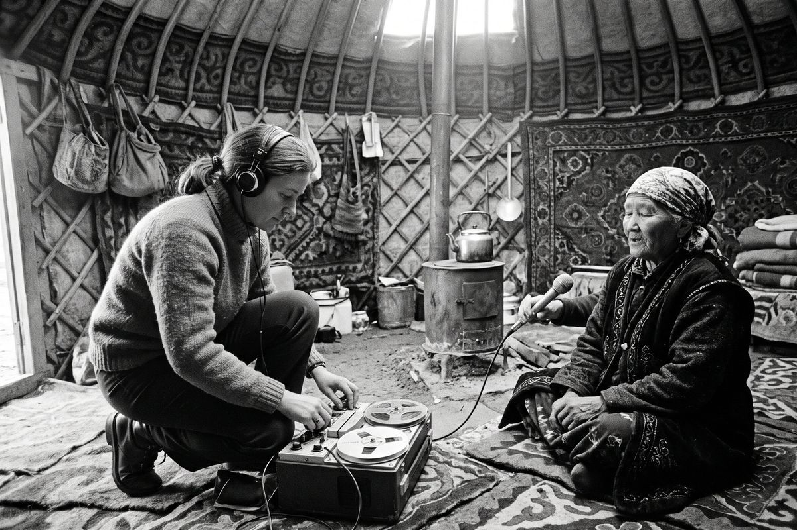

The collectors
Most of the archive was made by a handful of people with a tape recorder, a bag of reels and a lot of patience.

Aigul Choro kyzy (1934–2011)
A singer’s daughter from the Talas valley and the Conservatory’s first collector. From 1967 to 1990 she spent every summer on the road with a Reporter-5 tape recorder, often with Professor Sagyn Jusupbekov’s student expeditions: she made the tapes, he wrote down the texts. About 1,100 reels are hers. She was the first to record the lament singer Cholpon Kasym kyzy, in the Suusamyr in the 1980s.
Sagyn Jusupbekov (1936–1992)
The folklorist who compiled the six volumes of Oral Folk Art of Irad. His texts and Aigul Choro kyzy’s tapes are two halves of the same work, and many entries here carry both their names. His papers are in the State Archives, fond 175.
Nurgul Abdrakhmanova (b. 1958)
Collector from 1985 and keeper of the archive from 2004 to 2020. She recorded the songs of longing in the high pastures and the last weddings sung in full in Arsha-Say.
Kubanychbek Asanov (b. 1966)
Brought the archive digital tape in 1994 and recorded the three-voice hymns of the yurt churches of the Chatkal when they could be recorded again. Keeper of the archive since 2020.
The students
Every summer since 1996 the Conservatory’s third-year students go out for three weeks with a collector. Their recordings are numbered with the year and their names are in the cards.